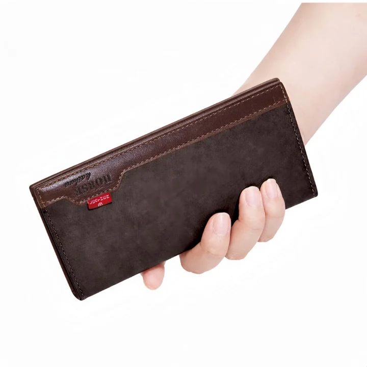

Best Belts & Wallets in Multan: Practical Shopping Guide

Looking for the best belts & wallets in Multan? This practical shopping guide helps you navigate the options available on Sasta Milaga. The catalog features a range of wallets from WAGLOK, including unisex and trifold styles, all designed for daily use. While the category suggests a broader range of products, the current listings focus primarily on wallets, with limited options for belts. The guide highlights key factors like material, organization, and durability to help you make an informed choice. Prices start at PKR 593, with delivery fees and return policies outlined for convenience. Whether shopping online or in person, this guide ensures you find the right fit for your needs.
Quick buying check: Match the actual item to your task, check its measurements or compatibility, and compare the full delivered price. Read the listing and policies before you order. The examples below are catalog evidence, not hands-on test results.
Key benefits of choosing Belts & Wallets carefully
- Better fit for your task: select the specification or design your situation needs.
- Clearer budget: compare the item, delivery and any required extras together.
- Fewer avoidable returns: resolve missing measurements and compatibility questions before ordering.
- More useful ownership: check how the item will be stored, cleaned and used.
Selection criteria and matching the actual task for Belts & Wallets
When selecting belts and wallets in Multan, focus on practical needs and daily use. Consider the material quality, durability, and design that suits your lifestyle. Look for items that match your style and functional requirements, such as belt width for different outfits or wallet size for carrying essentials. Prioritize brands or sellers known for reliability in the local market. Check for customer reviews and return policies to ensure satisfaction.
Evaluate the actual task each item will perform. A belt may need to support a specific type of clothing or last through daily wear. A wallet should accommodate your cash, cards, and personal items without being too bulky. Think about where you’ll use the product—whether for work, travel, or casual outings. Ensure the product’s features align with these scenarios.
Consider how well the product fits your budget and long-term needs. Compare prices and features across different sellers, but don’t sacrifice quality for cost. Factor in delivery charges and payment methods, especially if using cash on delivery. Check if the seller offers warranties or guarantees. Ensure the product meets your current and future requirements, avoiding items that may become obsolete. Make sure the item is easy to maintain and store.
Fit, dimensions, compatibility or edition checks for Belts & Wallets
Fit is essential when choosing belts and wallets in Multan. Ensure the belt size matches your waist measurement and the wallet fits comfortably in your pocket or bag. Check the dimensions carefully, as some products may vary in size. Look for adjustable straps and flexible materials for better fit. Always refer to the seller’s size chart for accurate measurements.
Dimensions play a key role in compatibility. A wallet should fit your daily essentials without being too bulky. Check the length, width, and depth to ensure it meets your needs. For belts, confirm the buckle size and strap thickness match your clothing. Some products may not fit standard pants or bags, so verify these details before purchasing.
Compatibility with your lifestyle and needs is crucial. Consider how often you’ll use the item and whether it suits your daily routine. Check if the product aligns with your style and functional requirements. Ensure the design and features match your expectations. Always review the product description for any specific compatibility notes. For example, some wallets may not have enough space for multiple cards or cash.
Quality evidence and limitations of listing claims for Belts & Wallets
Quality evidence for listing claims about belts and wallets in Multan includes customer reviews, product descriptions, and brand reputation. Look for detailed specifications like material type, craftsmanship, and durability. Verify claims through multiple sources such as online marketplaces or local stores. Ensure the evidence reflects real user experiences rather than promotional content. Avoid relying solely on price or brand name as indicators of quality. Cross-check information to confirm accuracy and relevance to the local market.
Limitations of listing claims often involve incomplete or misleading information. Some listings may lack detailed descriptions or high-quality images, making it hard to assess true quality. Claims about delivery times or customer service might not align with actual experiences. Be cautious of exaggerated benefits or unverified reviews. Always check for return policies and warranty information. These factors can significantly impact the shopping experience and satisfaction with the product.
Practical advice includes focusing on verified details and user feedback. Prioritize listings with clear product images and comprehensive descriptions. Compare multiple sources to identify consistent information. Be aware of potential discrepancies between online listings and physical products. Use local forums or social media groups for additional insights. Always read the fine print regarding returns and customer support. This approach helps make informed decisions and reduces the risk of dissatisfaction.
Budget tradeoffs and the full delivered cost for Belts & Wallets
Budget tradeoffs require careful evaluation of what you prioritize in belts and wallets. In Multan, focus on essential features like material quality and functionality rather than decorative elements. A slightly higher upfront cost may offer better long-term value if the product lasts longer or requires less frequent replacement. Consider your usage patterns—daily wear may justify a more durable option, while occasional use could allow for a more affordable choice.
Full delivered cost includes shipping, taxes, and any additional fees. In Pakistan, delivery charges can vary significantly between sellers, so always calculate the total before purchasing. Some platforms may list a low product price but add high shipping costs, while others bundle delivery into the price. Be mindful of these hidden expenses, especially when shopping online. Checking the total cost upfront helps avoid surprises and ensures your purchase stays within your budget.
Prioritize what matters most for your needs. For example, a wallet’s organization and size may be more important than brand name. Look for reviews and seller reliability to gauge quality and service. Avoid deals that seem too good to be true, as they may come with hidden costs or poor quality. Making informed choices ensures you get the best value for your money.
Setup, care, storage and useful ownership for Belts & Wallets
Setup for belts and wallets involves ensuring they are properly adjusted and fitted for daily use. Check for any stitching issues or hardware defects before use. Store them in a dry place away from direct sunlight to maintain quality. Avoid overloading wallets to prevent strain on seams and closures. Regularly inspect for wear and tear to address issues early. When purchasing, verify the size and adjustability to ensure a comfortable fit for different occasions.
Care requires gentle handling and cleaning as per manufacturer guidelines. Use a soft cloth to wipe surfaces and avoid harsh chemicals. For leather items, apply conditioner sparingly to maintain suppleness. Keep belts and wallets away from moisture to prevent mold or discoloration. Always follow specific care instructions provided by the seller or brand. For fabric or synthetic materials, check if they are machine-washable or require spot cleaning.
Storage should be organized to prevent damage. Hang belts in a cool, ventilated area or lay them flat in a drawer. Store wallets in a designated spot to avoid crushing. Rotate items periodically to ensure even wear. Proper storage extends product life and maintains appearance for long-term use. Use breathable storage solutions to prevent dampness and odors. Keep items away from sharp objects that could puncture or scratch them.
Common mistakes, arrival inspection and returns for Belts & Wallets
Common mistakes when buying belts and wallets in Multan include overlooking material quality and ignoring the importance of proper sizing. Many buyers focus only on price or design, neglecting durability and comfort. It's essential to check for stitching, leather texture, and hardware strength before purchasing. Avoid rushing into a decision without considering how the product will fit into daily use.
Upon arrival, inspect belts and wallets for any damage or defects. Check for frayed edges, loose stitching, or missing components. Ensure the product matches the description and images provided. If anything is wrong, contact the seller immediately. Keep all packaging and documentation for returns. In Multan, some sellers may offer in-person inspections, so take advantage of that if available. Don't accept damaged items, as this can complicate the return process later.
Returns can be tricky, so understand the seller's policy before buying. Some online platforms may charge restocking fees or require the item to be in original condition. For cash on delivery, inspect the product before paying. If you're not satisfied, refuse the delivery. Always keep a record of your purchase and communication with the seller. In Pakistan, return processes vary, so being informed can save time and hassle.
Future changes and responsible shopping decisions for Belts & Wallets
Future changes in the belts and wallets market in Multan may include more sustainable materials and locally produced items. Consumers should look for brands that emphasize eco-friendly practices and ethical sourcing. Staying informed about industry trends can help make more conscious purchasing choices. Supporting local artisans can also contribute to a more responsible shopping environment. Keeping an eye on product origins and manufacturing processes is essential for making informed decisions.
Responsible shopping decisions involve considering the long-term value of belts and wallets rather than just initial cost. Evaluating durability and functionality ensures that purchases meet everyday needs. Checking for reliable customer reviews and return policies can prevent dissatisfaction. Being mindful of personal needs and avoiding impulse buys leads to better financial and environmental outcomes. Thoughtful planning before purchasing helps align choices with both practical and ethical values.
Consumers should prioritize brands that offer clear information about product care and maintenance. Following manufacturer guidelines ensures longer product life and reduces waste. Understanding the full cost, including delivery and potential fees, helps avoid surprises. Choosing trusted sellers with good customer service enhances the shopping experience. Being aware of available support options, like returns or repairs, adds confidence to purchases. Making informed choices supports both personal satisfaction and responsible consumption.
A useful buying decision connects your actual task to a clearly described item. A category name, attractive photo or low headline price cannot replace checking what will arrive and whether it fits.
Illustrative Pakistan use cases for Belts & Wallets
Illustrative: compare a fixed PKR budget
A person with a fixed budget in Multan might compare the full delivered costs of belts and wallets by adding the listed price to the delivery fee. For example, a wallet priced at 593 PKR with a 250 PKR delivery fee totals 843 PKR. This helps them decide if the total cost fits within their spending limit. They can also look for items that qualify for free delivery above 5000 PKR to save money on larger purchases.
Illustrative: check fit for shared home use
A family in Multan might check the fit or compatibility of a wallet for shared home use by considering its size and organization features. A long wallet with multiple card slots and a secure zipper pocket can hold essentials for both adults and children. They might look for unisex styles that suit different users and ensure the wallet is durable for daily handling. Testing the wallet’s structure at home helps them confirm it meets their needs before ordering online.
Illustrative: plan delivery and arrival inspection
Someone ordering a belt or wallet to a smaller town in Multan might plan to inspect the item on arrival. They can check the product description for details like material and color options to ensure it matches their expectations. Knowing the return window of 7 days and the return fee of 250 PKR helps them prepare for any issues.
Comparison and evidence from actual catalog listings
The following listing snapshot was recorded at 2026-10-27 05:15:22 PKT. These are seller-provided descriptions, not independent performance tests. A category label does not confirm that an item suits every task discussed in this guide. Check the linked item for its current price, availability, measurements and included accessories.
| Listed item | Snapshot price | Listing evidence and limits |
|---|---|---|
| LB-522 – Signature Series Long Wallet | Stylish Unisex Holder | Rs 593 | Listing description: Premium WAGLOK unisex wallet designed for men and womenHigh-quality microfiber synthetic leather for durability and smooth textureSleek and modern design with compact structureSize: 18 x 11 x 2 cm for perfect balance of space and portabilityAvailable in three stylish color options1 Photo / ID window for quick access14 card slots for maximum organization1 secure zipper Confirm any unspecified detail with the store. |
| LB-521 – Elite Long Trifold Wallet | Premium Everyday Carry | Rs 593 | Listing description: Premium Brand: WAGLOK Material: High-quality Microfiber Synthetic Leather Elegant long sleek design with modern finish Unisex style – suitable for men & women 14 dedicated card slots for maximum organization 1 clear ID / photo window for quick access 1 secure zipper pocket for coins & valuables 2 spacious cash & receipt compartments Strong stitching Confirm any unspecified detail with the store. |
| LB-519 Executive Style Trifold Long Wallet for Men & Women | Rs 593 | Listing description: The WAGLOK LB-519 Executive Style Trifold Long Wallet combines a modern design with practical everyday organization. Its spacious interior provides convenient storage for cards, cash, ID, coins, and other essentials while maintaining a sleek and organized appearance.Made from durable microfiber synthetic leather, this long wallet features a smooth finish, strong stitching, and a well-arranged interior Confirm any unspecified detail with the store. |
Delivery and returns: Sasta Milaga currently lists Rs 250 delivery, free above Rs 5,000. Usual estimates are 2-4 working days in major cities and 3-6 elsewhere. Returns can be requested within 7 days; damaged or wrong items return free, while other returns cost Rs 250. Check delivery terms and return terms for current conditions.
Frequently asked questions about Belts & Wallets in Pakistan
How do I choose Belts & Wallets for my needs?
To choose belts & wallets for your needs, consider the purpose—daily use, travel, or gifting. Look for features like card slots, ID windows, and secure pockets. Check the material for durability and comfort.
What should I check in the listing before ordering?
Before ordering, review the product description for details on material, size, and features. Check the color options and ensure they match your preferences. Verify the listed price and any additional costs like delivery.
How do I compare the full cost in Pakistan?
To compare the full cost in Pakistan, add the listed price to the delivery fee. Check if the total meets the free delivery threshold. Consider return costs if needed. Some items may have higher prices but better quality or features.
How much is Sasta Milaga delivery and how long does it take?
Sasta Milaga currently lists Rs 250 delivery, with free delivery on orders above Rs 5,000. Usual estimates are 2-4 working days in major cities and 3-6 working days elsewhere. Read the linked delivery page for current conditions and allow for your specific address.
Can I return a damaged, wrong or unsuitable item?
The published return window is 7 days after delivery. Damaged or wrong items return free, while other returns carry a Rs 250 fee. Read the linked return policy, keep the packaging and report the issue promptly.
Are the product examples independently tested recommendations?
No. The examples are a dated snapshot of seller-provided catalog listings. We have not independently tested these items or verified customer outcomes. Prices and availability can change. Open each product page, compare the stated specifications with your needs and ask the store about missing details.
Conclusion
The best belts & wallets in Multan offer a range of styles and features tailored to everyday needs, with options available from trusted brands like WAGLOK. While the listings provide clear product descriptions and pricing, they do not include hands-on testing, user reviews, or detailed comparisons. Shoppers should focus on key factors like material quality, organization features, and color options to make informed choices. For those looking to purchase, consider the delivery fees and return policies, which are outlined on the site. Practical next steps include reviewing product specifications, checking available colors, and ensuring the item fits personal usage requirements before placing an order.
Choose with a clear checklist. Browse Belts & Wallets and compare current listing details. Read how to order before placing a cash-on-delivery order. Take time to confirm the item fits your needs.
Tags: best belts & wallets in Multan, belts & wallets online Pakistan, buy belts & wallets online, belts & wallets price in Pakistan, belts & wallets comparison, belts & wallets shopping checklist, belts & wallets cash on delivery, how to choose belts & wallets for everyday use, what to check before buying belts & wallets online, compare belts & wallets with delivery costs in Pakistan, belts & wallets buying guide for Pakistani families, questions to ask before ordering belts & wallets with COD
More guides
Air fresheners size fit compatibility Pakistan: Size, Fit and Compatibility Checklist
Compare Air Fresheners in Pakistan: listing details, fit and delivered costs. Read product, delivery and return information before ordering.
Umrah travel checklist: documents, packing and planning
A practical Umrah checklist: passport and visa documents, what to pack for Makkah and Madinah, health preparation and booking tips.
Air conditioners (split) size fit compatibility Pakistan: Size, Fit and Compatibility Checklist
Compare Air Conditioners (Split) in Pakistan: listing details, fit and delivered costs. Read product, delivery and return information before ordering.